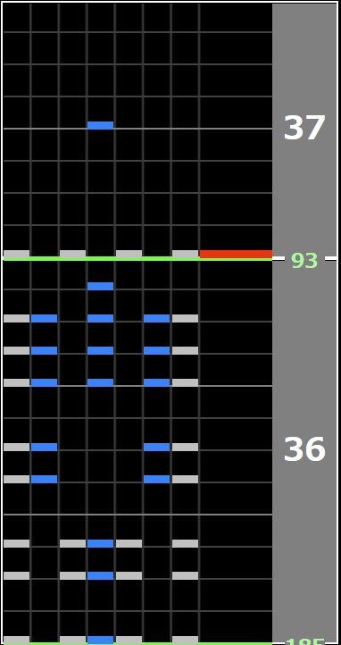
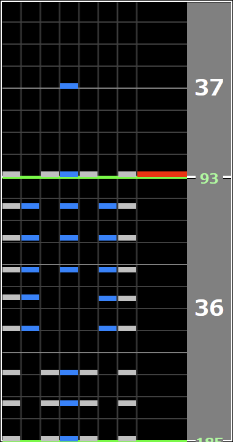
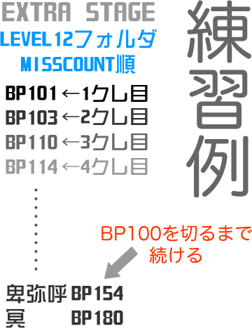

📑 文章目录（22 节）
- 什么是 SP 皆传：课题曲与通过者比例
- 皆传段位血条的参考标准约为 BP100
- 最大的敌人是“沾癖”：尽量不要碰课题曲
- 各课题曲对策
- 第 1 首：Somnidiscotheque（ANOTHER）
- 第 2 首：灼熱Beach Side Bunny（ANOTHER）
- 第 3 首：卑弥呼（ANOTHER）
- 第 4 首：冥（ANOTHER）
- 街机版旧作的第 1 首：EMERALDAS（ANOTHER）
- 从十段开始用 3 个月冲击皆传的练习菜单
- 开始练习前：关闭对手胜负显示等功能
- 每日练习量参考
- 灼热对策：通过各类皿曲提升“搓盘力（皿力）”
- 低速对策：用高 BPM 谱面提升“低速力”
- 冥的低速段不需要特别对策
- 练习核心：持续把 ☆12 的 BP 压到 100 以下
- 有助于考过 SP 皆传的网站与文章
- 通关管理与 ☆12 难度表
- 皆传合格心得
- 历代作品的皆传课题曲
- 常见问题
- 总结
- 💬 评论区答疑
本文总结了 IIDX（弐寺 / beatmania IIDX）通过 SP 皆传的攻略要点，将详细讲解 4 首课题曲各自的对策，以及从十段冲击皆传的练习菜单。
各个段位的参考曲目和通过人数比例已整理在“段位认定参考一览”中。
- 想通过皆传，只要能把每首课题曲的 Miss 数（BP）控制在 100 左右，就能看到过关希望
- 最大的敌人是沾癖。在地力练成之前，尽量不要去碰 灼熱、卑弥呼 和 冥
- 练习的核心是把 ☆12 文件夹中 Miss 数略高于 100 的曲子逐一降到 100 以下
- 只有连皿（灼熱）和低速（卑弥呼、冥）需要借助其他曲目单独做好对策
什么是 SP 皆传：课题曲与通过者比例
皆传是 SP 段位认定中的最高段位。连续游玩指定的 4 首曲目，只要段位专用血条能坚持到最后不空即可合格。
目前街机版（ZINRAI）的皆传由以下 4 首曲目构成，全部为 ANOTHER 谱面，于 2026 年 11 月 12 日实装。
- Somnidiscotheque
- 灼熱Beach Side Bunny
- 卑弥呼
- 冥
曲目阵容与 Pinky Crush、Sparkle Shower 相同。街机版皆传长期以来一直保持着“仅更换第 1 首，第 2～4 首固定为 灼熱、卑弥呼、冥”的结构。由于 INFINITAS（PC 版）的段位认定课题曲不同，本文仅针对街机版皆传展开讲解。
根据官方的段位认定者总览统计，在 EPOLIS（31）中取得 SP 段位的 49,221 人里，皆传共有 5,244 人（10.7%），大约每 10 个人中就有 1 个。
合格的参考水平大约是能用普通血条（Normal）通关 X-DEN（A）、Confiserie（A）这类 ☆12 上位曲。不过皆传课题曲中包含大量连皿与 BPM 变化（变速 / Soflan）等光靠地力难以硬推的要素，因此是一个个人差异非常大的段位。
皆传段位血条的参考标准约为 BP100
简单来说，想通过皆传，把每首课题曲的 Miss 数（BP）压在 100 以下就够了。就算稍微多一点也能过，但只要在 BP100 以下，就能相当稳妥地合格。
为此需要的是“把 BP 压进 100 以下的练习”。很多长期拿不到皆传的玩家，往往就是在这里搞错了方向。
从长远来看，刷 FC（全连）、刷 EXH、刷 HARD 也确实有助于减少 BP。但请务必记住，“认真精准地按好每一个键”与“面对大物量大致按住撑过去”完全是两码事。大致区分一下，它们之间的区别如下：
| 练习方式 | 属于什么练习（大致参考） |
|---|---|
| 刷 FULL COMBO（FC） | 把断连数降为 0 的练习 |
| 刷 EXH | 把 BP 压进 20 以下的练习 |
| 刷 HARD | 把 BP 压进 40 以下的练习 |
| 段位练习 | 把 BP 压进 100 以下的练习 |
段位考验的是“面对高密度物量时大致按住并顶过去的生存能力”。如果想在短期内拿到皆传，先把其他刷灯计划暂时放一放，把精力集中在“将 BP 压进 100 以下的练习（用段位血条撑住的练习）”上才是捷径。
最大的敌人是“沾癖”：尽量不要碰课题曲
段位认定的基本原则就是尽量不要去打课题曲的正谱和镜像（MIRROR）。反复打相同的键位配置，很容易记住错误的按法或节奏，从而练出坏癖（沾癖）。
皆传也一样，在持续降低 ☆12 的 BP、练出稳过的地力之前，建议尽量不要碰课题曲，尽可能争取一次通过。
尤其是 灼熱、卑弥呼 和 冥，哪怕开了 RANDOM（乱）也最好尽量少打。因为即便开 RANDOM，也可能会对变速（Soflan）、轴、纵连和转盘（皿）产生心理阴影或抗拒感。在其他 ☆12 曲目还没把 BP 压进 100 以下之前，几乎完全不碰 灼熱、卑弥呼、冥 才刚刚好。
虽然也有“不打冥就练不好冥”的说法，但那也是等你达到能正面挑战冥的水平之后再考虑的事。
- 为了防止沾癖，每周最多只考 1 次
- 考试前一定要充分热身（至少打 2～3 币）
- 状态不好的日子坚决不考
各课题曲对策
下面介绍每首课题曲的特点与对策。关于 灼熱 和 冥，我另外写了附带谱面截图与指法（运指）说明的详细攻略文章。
第 1 首：Somnidiscotheque（ANOTHER）
RESIDENT 新增曲目，BPM115，共 1,776 物量。从 Pinky Crush 开始担任皆传第 1 首。
如果在第 1 首就挂掉，后面的 3 首大概率也会非常吃力。与其专门针对课题曲做对策，不如踏踏实实地推进 ☆12 刷未 HARD 曲目与新增通关，等大约 1 个月后再来挑战，这样反而更快。
第 2 首：灼熱Beach Side Bunny（ANOTHER）
以连皿为核心的谱面。对擅长转盘（皿）的玩家来说几乎没有挂点，但也有人认为它是 4 首里面最难的一首。
练好转盘（皿）的诀窍在于，不要只打 ☆12 的皿曲，还要去打 ☆10 和 ☆11 的皿曲并尝试全连（FC）等，从较低难度开始认真掌握正确的搓盘方式。
虽然升级到 Lightning 机台（LM 机台）之后，手腕搓盘（手首皿）的响应也已经足够灵敏，但面对连皿还是正常用手搓要简单得多。至少在这首歌里，千万不要用手腕搓盘。
第 3 首：卑弥呼（ANOTHER）
超过 2,000 物量的大谱面，几乎集齐了纵连、低速、轴、楼梯等所有高难要素。也有不少声音认为，它在纯地力要求上甚至高于关底曲 冥。
进入低速之前的纵连段，按照下图的方式用逆馅蜜来按会稳很多。这一段能不能保住血量，对后半程影响非常大。


不擅长尾杀低速段的玩家，可以把绿数字调成平时的 2 倍去打 ☆8～10作为练习。这同时也是 冥 的低速对策，所以在卑弥呼低速段卡壳的玩家，哪怕每次去机厅只练 1 币也请坚持下去。低速对策会在后面的练习菜单中进一步详述。
第 4 首：冥（ANOTHER）
前段的楼梯段在 IIDX（弐寺）中属于特别容易沾癖的配置，严禁死磕。不过，全曲最大难点“从低速一路加速的纵连段”确实需要专门对策，而且这是只有 冥 才有的独特谱面，只能通过打 冥 来练习。
当你考皆传已经能够稳定见到 冥 之后，就可以尝试把 冥 开 RANDOM 加入日常练习菜单了。
街机版旧作的第 1 首：EMERALDAS（ANOTHER）
从街机版 BISTROVER 到 EPOLIS 期间，第 1 首都是 EMERALDAS（从 Pinky Crush 起改为 Somnidiscotheque）。虽然带有低速等略显特殊的段落，但整体上是一首需要靠硬实力顶过物量的地力谱。如果倒在这一首，就和以前的 嘆きの樹 一样，与其研究局部对策，不如先提升地力再来挑战。
从十段开始用 3 个月冲击皆传的练习菜单
接下来是我设想“如果自己现在是 SP 十段，想用最快速度考过皆传该怎么练”而设计的一套练习菜单。契机是曾看到有人说从皆传到发狂皆传只用了 3 个月，于是心想“那从十段到 SP 皆传岂不是能更快达成吗”。
需要说明的是，笔者本人并非照着这套菜单考过的，也没有找人实际测试过。至于是不是真的能在 3 个月内通过并不确定，请将其作为思路参考。
如果你还没有考过 SP 十段，请先查看十段的参考标准与课题曲对策。
开始练习前：关闭对手胜负显示等功能
开始练习之前，先把对手胜负（Rival Win/Lose）显示设为 OFF，以此断绝“想赢过对手”这类转向其他玩法的诱惑。
如果想用最短时间拿下皆传，去拼分数或者拼通关灯（Clear Lamp）几乎没有意义。为了能心无旁骛地持续压低 BP，要把所有可能诱发其他玩法的功能彻底关掉。
街机版的对手胜负显示可以在官网自定义设置中的“ライバル勝敗＆店内TOP表示”（对手胜负＆店内 TOP 显示）里切换（属于 e-amusement Basic Course 项目，默认即为 OFF）。
同时把选曲文件夹也精简掉。从 Pinky Crush 开始选曲界面改为了分类式，在文件夹关闭状态下长按黑键即可选择要显示的分类。只保留等级（Level）分类的话，对手文件夹、通关灯文件夹和 DJ LEVEL 文件夹（DJ DATA）都不会出现。留着通关灯文件夹就会忍不住想刷 HARD，打开 DJ LEVEL 文件夹又可能会想多刷几个 AAA。
每日练习量参考
虽然用 Premium Free（自由时间模式）效果更好，但这里以街机 Standard（标准模式）每天大约 10 币为前提来安排。换算成时间大约是 2 小时，人的专注力差不多也就只能维持这么久。如果是 INFINITAS，请以相当于 10 币的 40 首曲目作为单次练习参考。
- 第 1 币：用 ☆10～11 的乱打曲热身
如果一上来就直接打正式练习，很容易因为打不好而挫伤积极性。随便选几首物量稍多的 ☆10～11 乱打曲，先把手指活动开，顺便让眼睛进入状态。
- 第 2 币起的第 1、2 首：灼热对策、低速对策、S-RANDOM（超乱）
Standard 模式下第 1、2 首大多选不了 ☆12，所以这段时间用来练灼热对策和低速对策。如果已经能稳过灼热，且卑弥呼最后的低速也没有问题，推荐为了提前适应冥的纵连而去打 S-RANDOM（超乱）。只要是 ☆10～11、BPM 在 120～150 左右的曲子都能起到练习作用，按 BPM 排序挑着打即可。
- 第 3 首＆EXTRA：一门心思降 BP
在可以选择 ☆12 的第 3 首和 EXTRA STAGE 里，专心致志地进行“降低 BP 的练习”。具体方法会在下面详细说明。
灼热对策：通过各类皿曲提升“搓盘力（皿力）”
转盘（皿）一旦出现小失误，就很容易引发连环 BAD（BAD ハマり）的崩盘事故，因此也需要认真练习搓盘。不擅长灼热、过不去的人，可以抱着“第 1、2 首全程只打皿曲”的觉悟，多接触各种不同的皿曲，把整体的“搓盘力（皿力）”拔高。不用在意刷 EASY 还是刷 HARD，先把各种皿曲通通打一遍。
就算不刻意去背灼热的转盘节奏，也不专门去练灼热本身，只要搓盘力提上来了，段位血条自然就能撑过去。
最忌讳的做法就是死磕着只打灼热。就算开了 RANDOM，转盘的配置也不会变，很容易把张数记错，或者练出连环 BAD 的坏癖。反复重复“打不好的操作”，最终只会把“打不好的操作”练得越来越熟练。
实在想为灼热做点什么的话，听听皿曲的拍手音（Clap）掌握一下节奏就够了。
低速对策：用高 BPM 谱面提升“低速力”
觉得卑弥呼最后的低速段来得及做变速调速（Gear Change）的人，直接调速也没问题。不过，单纯把“低速力”练起来，以后会更有用。
虽然无倍速（No-Speed）或“把绿数字调成 2 倍来打”对练低速力很有效，但估计大多数人很难坚持下去。因此更推荐的方法是以高 BPM 谱面为主进行集中练习。
低速力与看清纵向高密度谱面（高 BPM）的读谱能力是相通的。举例来说，“BPM100 配绿数字 600”与“BPM200 配绿数字 300”只是下落速度不同，把画面定格来看，两者的纵向密度是完全一样的。无论是从我自己的经验还是观察其他玩家来看，能看清高 BPM 之后，低速也就能看清了（反之亦然）。
作为纵向密度较高的谱面，推荐以下曲目，同时也能兼顾 冥 前段的对策。括号内为 SP ANOTHER 难度以及在 INFINITAS 中对应的曲包。
- 君のハートにロックオン（BPM260・☆11，曲包 vol.2）
- Illegal Function Call（BPM260・☆11，曲包 vol.4）
- バンブーソード・ガール（BPM208・☆11，INFINITAS 未收录）
- Cookie Bouquets（BPM205・☆11，曲包 vol.4）
- M.D.Injection（BPM202・☆10，曲包 vol.6）
INFINITAS 曲包的收录内容与价格整理在下面这篇文章中。
冥的低速段不需要特别对策
不擅长 冥 低速段的玩家，大多数情况并不是因为低速力不够，而是按不好纵连与转盘（皿）的复合配置。这部分能力会通过接下来要讲的“降 BP 练习”来打牢。只有当你达到足以打 冥 的水平之后，开 RANDOM 打 冥 本身才真正算得上是对策。
练习核心：持续把 ☆12 的 BP 压到 100 以下
在第 3 首和 EXTRA STAGE 里，把 ☆12 文件夹中“BP 略高于 100 的曲子”一首接一首地打到“BP100 以下”。虽然也可以按通关灯去刷，但那样容易让人想死磕，所以不推荐。比起死磕 1 首曲子，接触大量不同的谱面要重要得多。
打开 ☆12 文件夹后，通过排序（Sort）按 Miss 数从多到少（或按 Miss 数顺序）排列。在街机上，关闭文件夹状态下每按一次数字小键盘的 2 就能切换排序方式，按到第 10 项就是“Miss 数（ミスカウント）”（官网数字小键盘说明）。在 Lightning Model 上，可以点击副屏（Premium Area）上方左右两侧的图标呼出数字小键盘。INFINITAS 则是按小键盘或大键盘数字 2，用专控的话按黑键即可切换排序。
街机第 3 首如果挂掉会很可惜，所以第 3 首稳妥起见可以选开 ASSIST EASY 不会挂的曲子。到了 EXTRA STAGE，则务必按照以下规则选曲：
- 从 Miss 数最接近 100 的曲子开始依次往下打
- 目标是将 BP 降到 100 以下
- 开启 RANDOM（乱）
- 无论什么类型的谱面都绝不挑食
把 ☆12 文件夹中 Miss 数在 100 以上的曲子逐一清空的“压进 BP100 练习”，正是这套练习菜单的核心。最后一直持续到 冥 和 卑弥呼 的 BP 也各自降到 100 以下为止。

练到这个程度再去考皆传，只要正谱和镜像没有沾上极其严重的坏癖，基本就稳过了。
有助于考过 SP 皆传的网站与文章
通关管理与 ☆12 难度表
对照 ☆12 的难度参考，一步一个脚印地更新通关灯是最稳妥的路线。CPI:Next 是一个根据谱面数据估算难度的非官方网站，同时也分析了各个段位课题曲的难度。
皆传合格心得
阅读已经通过皆传的玩家写的文章，既能参考练习方法，也能提升干劲。
※如需申请增补或删除链接，请通过联系表单与本站联络。
历代作品的皆传课题曲
以下是历代街机版与家用版的皆传课题曲（全部为 ANOTHER；家用版中的“黑”指黑 ANOTHER）。当前 ZINRAI 的曲目已写在文章开头的“什么是 SP 皆传”部分。
街机版历代作品
| 作品 | 课题曲（第 1～4 首） |
|---|---|
| Sparkle Shower | Somnidiscotheque／灼熱Beach Side Bunny／卑弥呼／冥 |
| Pinky Crush | Somnidiscotheque／灼熱Beach Side Bunny／卑弥呼／冥 |
| EPOLIS | EMERALDAS／灼熱Beach Side Bunny／卑弥呼／冥 |
| RESIDENT | EMERALDAS／灼熱Beach Side Bunny／卑弥呼／冥 |
| CastHour | EMERALDAS／灼熱Beach Side Bunny／卑弥呼／冥 |
| BISTROVER | EMERALDAS／灼熱Beach Side Bunny／卑弥呼／冥 |
| HEROIC VERSE | 嘆きの樹／灼熱Beach Side Bunny／卑弥呼／冥 |
| Rootage | 嘆きの樹／灼熱Beach Side Bunny／卑弥呼／冥 |
| CANNON BALLERS | 嘆きの樹／灼熱Beach Side Bunny／卑弥呼／冥 |
| SINOBUZ | perditus†paradisus／灼熱Beach Side Bunny／卑弥呼／冥 |
| copula | perditus†paradisus／灼熱Beach Side Bunny／卑弥呼／冥 |
| PENDUAL | 嘆きの樹／灼熱Beach Side Bunny／卑弥呼／冥 |
| SPADA | 嘆きの樹／灼熱Beach Side Bunny／卑弥呼／冥 |
| tricoro | 嘆きの樹／天空の夜明け／卑弥呼／冥 |
| Lincle | 嘆きの樹／perditus†paradisus／卑弥呼／冥 |
| Resort Anthem | Bad Maniacs／嘆きの樹／卑弥呼／冥 |
| SIRIUS | quell～the seventh slave～／嘆きの樹／卑弥呼／冥 |
| EMPRESS | 嘆きの樹／MENDES／卑弥呼／冥 |
| DJ TROOPERS | ピアノ協奏曲第１番”蠍火”／嘆きの樹／MENDES／冥 |
| GOLD | FIRE FIRE／嘆きの樹／ピアノ協奏曲第１番”蠍火”／冥 |
| DistorteD | rage against usual／嘆きの樹／ピアノ協奏曲第１番”蠍火”／冥 |
家用版历代作品
| 作品 | 课题曲 |
|---|---|
| EMPRESS | 嘆きの樹／3y3s／卑弥呼／冥 |
| DJ TROOPERS | NEW GENERATION -もう、お前しか見えない-（黑）／Blue Rain（黑）／Anisakis -somatic mutationtype “Forza”-（黑）／ICARUS（黑） |
| GOLD | Fascination MAXX／ピアノ協奏曲第１番”蠍火”／Vanessa（黑）／KAMAITACHI（黑） |
| DistorteD | quell～the seventh slave～／嘆きの樹／Go Beyond!!／冥 |
| HAPPY SKY（里 7 级） | Scripted Connection⇒ long mix（HYPER）／冥 |
常见问题
SP 皆传玩家大约占百分之多少？
根据官方段位认定者总览的统计，EPOLIS 中通过 SP 段位的 49,221 人里，皆传共有 5,244 人（10.7%），大约每 10 人中就有 1 人。由于也有人每代只考八段等较低的段位，实际具备皆传地力的玩家应该会再多一些。
通过皆传的大致水平标准是什么？
参考标准大约是能用普通血条（Normal）通关 X-DEN（A）、Confiserie（A）这类 ☆12 上位曲。在段位模式中，只要能把每首课题曲的 BP 控制在 100 左右就能看到过关希望。不过由于课题曲个性极强，个人差异会很大。
大概应该保持怎样的练习频率？
理想情况是每天都练，至少也要保证每周 2 次。难度越高，手生得就越快，如果每周只打 1 次，光是维持当前实力就已经很勉强了。每天练习 10 币（约 2 小时）就足够，注意力一散就该休息。如果手指或手腕出现疼痛或异样感，请立刻停止游玩。
一定要用 BMS 或 INFINITAS 练习吗？
并不是必须的。有条件的话配合它们练习确实效率更高，但只打街机也完全可以冲击皆传。另外，INFINITAS 的段位与街机是分开记录的。
需要专门去练皆传的课题曲吗？
在地力达标之前，建议尽量不要碰。尤其是 灼熱、卑弥呼、冥 非常容易沾癖，在其他 ☆12 曲目的 BP 还没降到 100 以下之前，最好完全别打。只有 冥 的低速加速纵连段，等你打皆传能稳定见到 冥 之后，再开 RANDOM 去练习即可。
总结
SP 皆传只要能把每首课题曲的 BP 压在 100 左右，就能看到过关的曙光。为此，与其死练课题曲，不如通过降低整体 ☆12 的 BP 来走最稳妥的捷径。
- 把 ☆12 文件夹中 BP 略高于 100 的曲子全部不挑食地开 RANDOM 打进 100 以下
- 灼热对策靠多打各类皿曲来提升搓盘力（皿力）
- 低速对策靠打高 BPM 谱面或 2 倍绿数字练习来提升低速力
- 课题曲容易沾癖，在具备稳过地力前尽量少碰
早一步拿到皆传并不代表就比别人高人一等，况且这款游戏在拿到皆传之后还有长得多的路要走。放平心态，一边享受游戏一边坚持下去吧。
💬 读者评论与作者答疑（4 组对话）